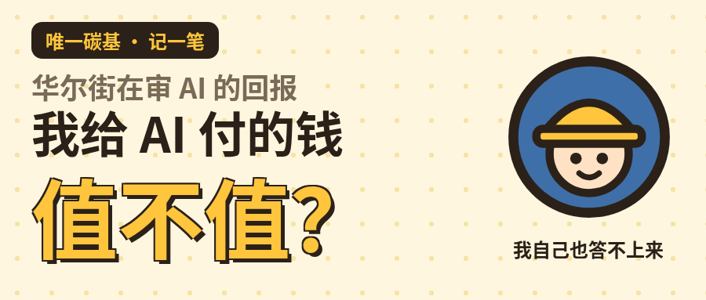
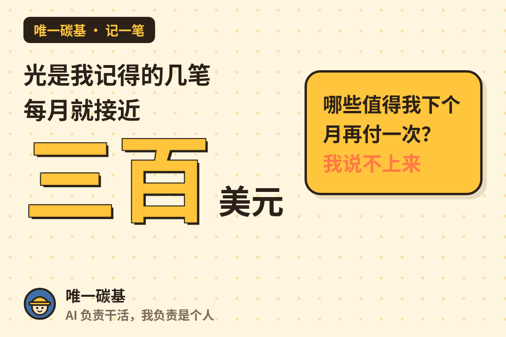
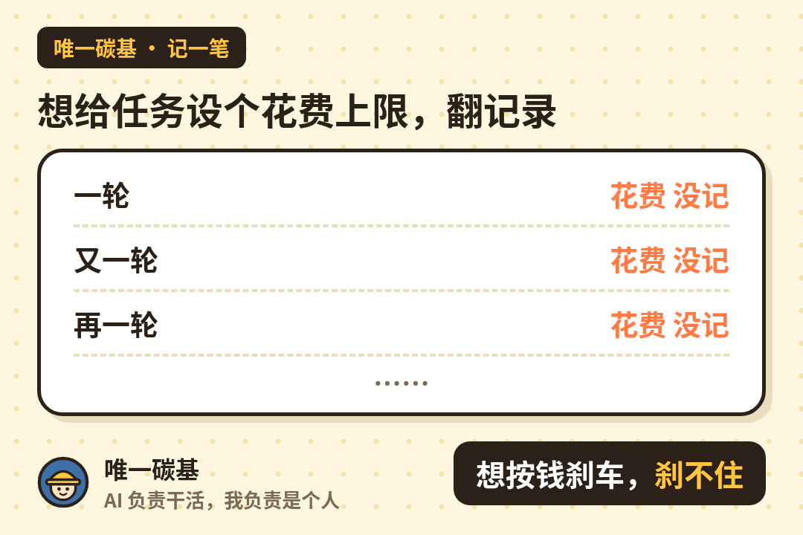
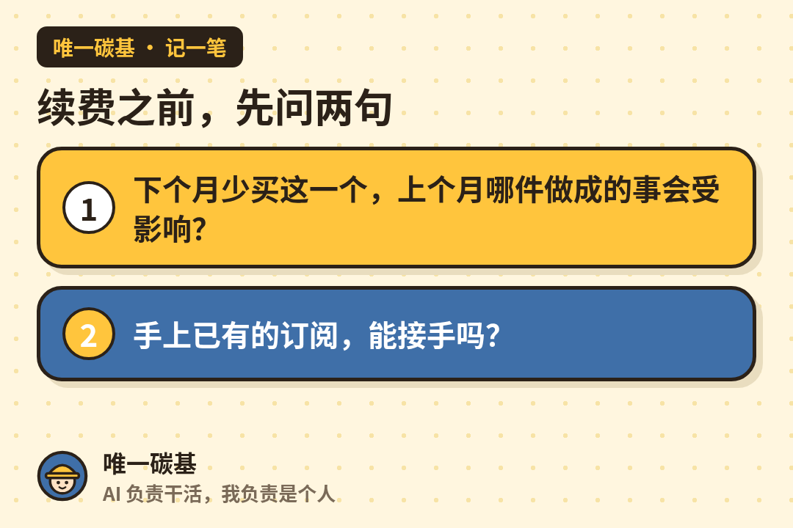

华尔街在审 AI 值不值，我先发现自己答不上来
手边有一个很强的 AI，我有比较稳定的办法用上它。我觉得它是现在最强的几个 AI 之一。 这样的东西放在手边，不用，我就觉得亏。 买额度这件事，有时我自己也说不清楚为什么。也许只是想给自己买个心安。 你手上可能也有这么一

手边有一个很强的 AI，我有比较稳定的办法用上它。我觉得它是现在最强的几个 AI 之一。
这样的东西放在手边，不用，我就觉得亏。
买额度这件事，有时我自己也说不清楚为什么。也许只是想给自己买个心安。
你手上可能也有这么一个订阅。下个月还续不续，大概也没细想过。
这周新闻里，华尔街也在问同一件事，砸了这么多钱做 AI，回报到底在哪。
我一开始觉得，这是大公司的事。后来数了一下自己的，光是我记得的几笔，每月就接近三百美元。

花了这些钱，哪些东西值得我下个月再付一次，我说不上来。
很多时候，我是靠一句反正以后可能有用，在说服自己。
前几天，我想给 AI 干的活设一个花费上限。我跟它们说，你们弄多少回我都不怕，我只要一个结果和一个额度上限，就怕额度烧完，结果还出不来。
可翻了记录才发现，好多轮根本没记花了多少。想按钱刹车，刹不住。

最后只能先按次数和时间来卡。可次数管的是最多做多少，管不了做出来值不值。
所以下次续费之前，我想先问自己两句。你也可以拿手上的订阅试试。
下个月如果少买这一个，上个月哪件做成的事会受影响。
手上已有的订阅，能不能接手这件事。

举个例子。如果一个订阅停了，上个月做成的事一件都不受影响，或者另一个订阅就能接手，那它大概就不是非续不可。
两句都答不上来，这笔钱多半就是在买心安。买心安也不是不行，我只是想知道自己在买什么。
你手上那个订阅，下个月还值得再付一次吗？
← 继续读其他文章作者 · Max Huang